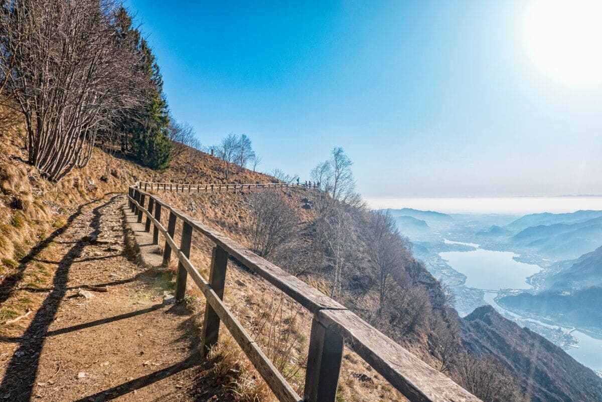
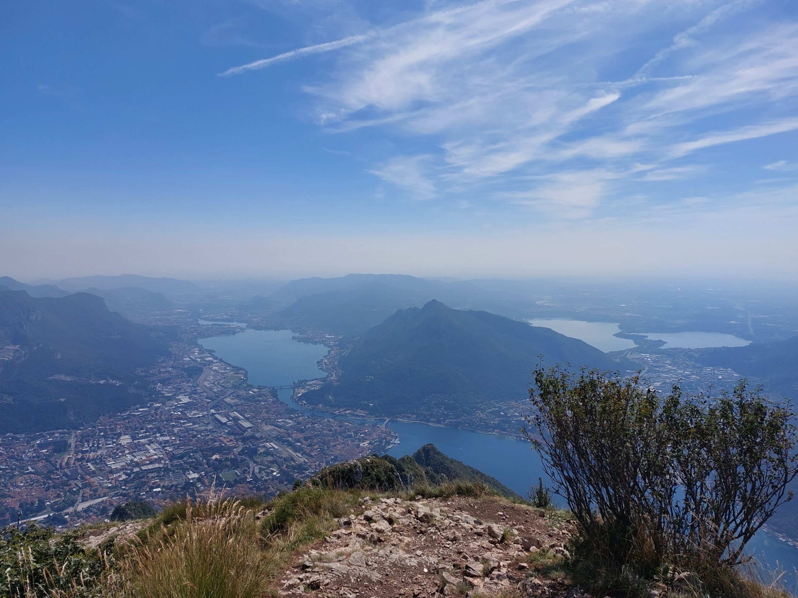

I Piani dei Resinelli o Piani Resinelli o Pian de' Resinelli (Piàn di Resnèi in dialetto lecchese, ossia "Altopiano della famiglia Resinelli", dal nome della famiglia che ne ebbe la proprietà), sono un altopiano delle Prealpi lombarde, in provincia di Lecco, compreso tra i 1200 ed i 1300 m s.l.m., all'interno del territorio dei comuni di Abbadia Lariana, Mandello del Lario, Ballabio e Lecco, alle pendici della Grignetta, divenendone punto di appoggio per le relative escursioni.

La splendida vista su Lecco e il lago di Como dai Piani dei Resinelli
